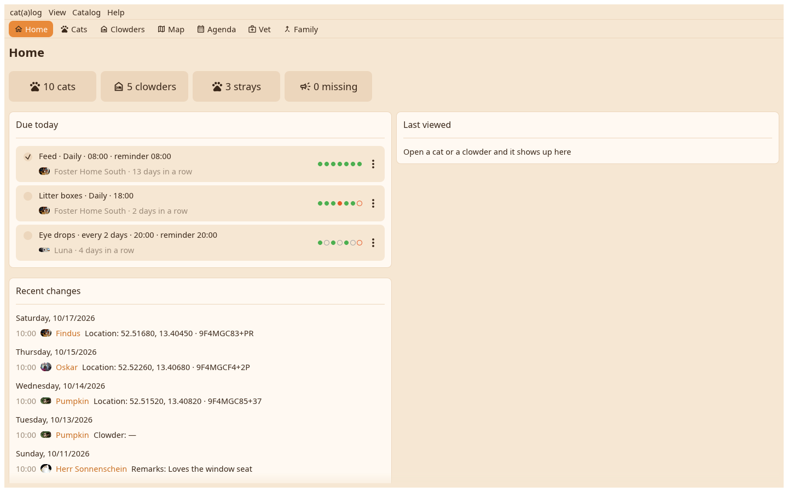

The desk opens on Home: the counts, what is due today with its boxes, the recent changes and the cat or home you looked at last. Above it the view bar, above that the menu bar.

One menu under the app's name holds Settings and Quit. View switches the views and shows hidden things. Catalog holds everything about the open catalog: new clowder, sync, capture a flier, find duplicates, go back, backups, restore, archive, moderation, catalogs. Help has the help and the About page with the licences.
Home, Cats, Clowders, Map, Agenda, Vet and Family, each reached by a click on the bar or Ctrl with 1 to 7. Every view opens with its name as a headline, then its toolbar and content.
Due today: the chores and appointments of the day with a box that ticks or finishes them. Recent changes: who changed what, by day. Last viewed: the last seven cats and homes, a click opens one.